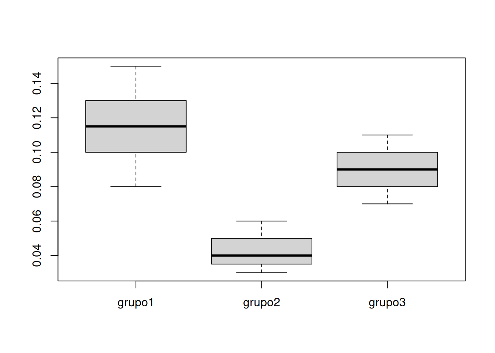

Al igual que los intervalos de confianza paramétricos, las pruebas de hipótesis paramétricas deben cumplir principalmente con el supuesto de normalidad, debido a que esta distribución origina las distribuciones chi-cuadrado, t-Student y la F, empleadas como modelos para los estadísticos de prueba asociados con la media, proporción y varianza en una y dos poblaciones.
Se está investigando el nivel de contaminación de plomo en el agua de una fuente en una zona industrial y se desea probar si el nivel promedio de plomo supera el límite de seguridad de \(10\) microgramos por litro (µg/L). Por investigaciones anteriores se sabe que esta variables tiene una distribución aproximadamente normal
\[Ho : \mu \leq 10\]
\[Ha : \mu > 10\]
x <- c(11.2, 9.8, 10.5, 10.1, 11.5, 12.0, 9.6, 9.9, 10.3, 10.7)
t.test(x,
alternative = "greater",
mu = 10,
# paired = FALSE,
# var.equal = FALSE,
conf.level = 0.95)
One Sample t-test
data: x
t = 2.2442, df = 9, p-value = 0.02574
alternative hypothesis: true mean is greater than 10
95 percent confidence interval:
10.10258 Inf
sample estimates:
mean of x
10.56 El resultado indica que se rechaza la hipótesis nula, se acepta la hipotesis alterna. Por tal razón se puede afirmar que el contenido promedio de plomo supera los límites de seguridad establecidos en \(10\) microgramos por litro (µg/L)
Se estudia si la proporción de muertes por accidentes de transito causadas embriagez de conductores de autos supera 30% de las causas principales en la ciudad
Para validar esta hipótesis se realizó una busqueda de la inforamación contenida en los medios de comunicación durante los últimos 30 dias, arrojando la siguiente información:
\[Ho: p \leq 0.30\] \[p > 0.30\]
numéro de accidentes ocurridos último mes : 135 número de accidentes con resultados nefastos : 52 \(Ho: p \leq 0.30\)
\(Ha: p > 0.30\)
prop.test(x,n, p=0.30, alternative = "greater")
1-sample proportions test with continuity correction
data: x out of n, null probability 0.3
X-squared = 4.2681, df = 1, p-value = 0.01942
alternative hypothesis: true p is greater than 0.3
95 percent confidence interval:
0.3156832 1.0000000
sample estimates:
p
0.3851852 Como el valor-p arrojado por la prueba es menor al nivel de significancia del 5%, se rechaza la hipótesis nula, se acepta la hipótesis alterna como verdad. Se puede afirmar que la proporción de accidentes de transito en donde muere el conductor supera el 30% de los casos de accidentes de transito en la ciudad.
Supongamos que estás calibrando un espectrofotómetro en un laboratorio y deseas probar si la varianza de las mediciones realizadas por el espectrofotómetro cumple con las especificaciones del fabricante, que establecen que la varianza no debe superar 0.01 absorbancia.
Ho: La varianza de las mediciones del espectrofotómetro es igual o
mayor a 0.01.
Ha: La varianza de las mediciones del
espectrofotómetro es menor 0.01.
# Requiere la instalcion del paqute stests contenido en el repositorio fgernanb
# if (!require('devtools')) install.packages('devtools')
#devtools::install_github('fhernanb/stests', force=TRUE)
x <- c(0.02, 0.03, 0.02, 0.01, 0.03, 0.02, 0.01, 0.02, 0.03, 0.02)
stests::var.test(x, alternative='less',
null.value=0.01, conf.level=0.95)
X-squared test for variance
data: x
X-squared = 0.049, df = 9, p-value = 1.056e-09
alternative hypothesis: true variance is less than 0.01
95 percent confidence interval:
2.896156e-05 Inf
sample estimates:
variance of x
5.444444e-05 Como el valor-p (1.056e-09) es pequeño, se rechaza la hipótesis nula, se acepta la hipótesis alterna como verdadera. Se concluye que la varianza es menor a 0.01
Se requiere determinar si exisne diferencias en los contenidos obtenidos por dos métodos diferentes. Se procesaron 8 muestras bajo los dos métodos. Los resultados obtenidos son:
Metodo1 = c(7.2, 6.1, 5.2, 5.9, 9.0, 8.5, 6.6, 4.4)
Metodo2 = c(7.6, 6.8, 4.6, 5.7, 9.7, 8.7, 7.0, 4.7)
cat("Método1 :Valoración con AEDT ", Metodo1, "\n")Método1 :Valoración con AEDT 7.2 6.1 5.2 5.9 9 8.5 6.6 4.4 cat("Método2: Valoración Esoectrometría atómica ", Metodo2, "\n")Método2: Valoración Esoectrometría atómica 7.6 6.8 4.6 5.7 9.7 8.7 7 4.7 \[Ho: \mu_1 = \mu_2\] \[Ha: \mu_1 \neq \mu_2\]
t.test(Metodo1, Metodo2, alternative = "two.sided", mu =0, paired = TRUE)
Paired t-test
data: Metodo1 and Metodo2
t = -1.5136, df = 7, p-value = 0.1739
alternative hypothesis: true mean difference is not equal to 0
95 percent confidence interval:
-0.6085316 0.1335316
sample estimates:
mean difference
-0.2375 El resultado arroja un valor-p (0.1739) grande, lo que indica que no
se rechaza la hipótesis nula de que las medias son iguales
Se estudia si existen diferencias en la proporción de muertes por accidentes de transito causadas embriagez de conductores de autos y la proporción de muertes causados por accidentes en las que se involucran conductores de motocicletas en estado de embriaguez.
Para validar esta hipótesis se realizó una busqueda de la inforamación contenida en los medios de comunicación durante los últimos 30 dias, arrojando la siguiente información:
\[Ho: p_1 = p_2\]
\[Ha: p_1 \neq p_2\]
prop.test(c(15,8), c(320,100))
2-sample test for equality of proportions with continuity correction
data: c(15, 8) out of c(320, 100)
X-squared = 1.0385, df = 1, p-value = 0.3082
alternative hypothesis: two.sided
95 percent confidence interval:
-0.09768448 0.03143448
sample estimates:
prop 1 prop 2
0.046875 0.080000 Se desea validar si el contenido de alcohol en una marcas de cerveza con 4.0 º alcohol, de acuerdo con su etiquete, presenta un coeficiente de variación inferior al 10%. Para se recoge una muestra de n= botellas y mide la densidad para luego transformarla en porcentaje de alcohol.
Sabemos que \(CV = s/ \bar{x} =0.10\), con esta igualdad podemos encontrar el limite de la desviación estandar o su valor máximo.
\(s = 0.1 \times 4.0 = 0.40\)
En este caso se deben constrastar las hipótesis:
\(Ho: \sigma^{2} \geq 0.4\)
\(Ha: \sigma^{2} < 0.4\)
Los resultados obtendidos con .
set.seed(123)
mx <- 4.0
sx <- 0.2
x <- round(rnorm(20, mean = mx, sd = sx),1)
x [1] 3.9 4.0 4.3 4.0 4.0 4.3 4.1 3.7 3.9 3.9 4.2 4.1 4.1 4.0 3.9 4.4 4.1 3.6 4.1
[20] 3.9ANÁLISIS DE VARIANZA - ANOVA
\[Ho: \mu_1 = \mu_2 = \mu_3\] \[Ha: \text{alguna de las medias es diferente}\]
# Cargar los paquetes necesarios
library(stats)
library(agricolae)
Attaching package: 'agricolae'The following objects are masked from 'package:moments':
kurtosis, skewnesslibrary(TukeyC)
grupo1 <- c(0.08, 0.12, 0.10, 0.14, 0.09, 0.11, 0.13, 0.15, 0.10, 0.09, 0.11, 0.12, 0.13, 0.14, 0.08, 0.12, 0.10, 0.15, 0.11, 0.13)
grupo2 <- c(0.05, 0.03, 0.04, 0.06, 0.03, 0.05, 0.04, 0.06, 0.04, 0.05, 0.03, 0.04, 0.05, 0.06, 0.04, 0.03, 0.05, 0.06, 0.04, 0.03)
grupo3 <- c(0.07, 0.08, 0.09, 0.10, 0.08, 0.07, 0.11, 0.09, 0.10, 0.08, 0.09, 0.10, 0.11, 0.07, 0.08, 0.09, 0.10, 0.08, 0.07, 0.11)
grupos = data.frame(grupo1, grupo2, grupo3)
# Crear un data frame con los datos de los tres grupos
data <- data.frame(
Grupo = factor(rep(1:3, each = 20)),
Niveles_Benzodiazepina = c(grupo1, grupo2, grupo3)
)
boxplot(grupos)
# Realizar un ANOVA
modelo_anova <- aov(Niveles_Benzodiazepina ~ Grupo, data = data)
# Mostrar los resultados del ANOVA
summary(modelo_anova) Df Sum Sq Mean Sq F value Pr(>F)
Grupo 2 0.05149 0.02575 98.92 <2e-16 ***
Residuals 57 0.01484 0.00026
---
Signif. codes: 0 '***' 0.001 '**' 0.01 '*' 0.05 '.' 0.1 ' ' 1# Realizar comparaciones múltiples con la prueba de Tukey
comparaciones_tukey <- TukeyHSD(modelo_anova)
# Mostrar los resultados de las comparaciones múltiples de Tukey
print(comparaciones_tukey) Tukey multiple comparisons of means
95% family-wise confidence level
Fit: aov(formula = Niveles_Benzodiazepina ~ Grupo, data = data)
$Grupo
diff lwr upr p adj
2-1 -0.0710 -0.08327658 -0.05872342 0.0e+00
3-1 -0.0265 -0.03877658 -0.01422342 8.5e-06
3-2 0.0445 0.03222342 0.05677658 0.0e+00apply(grupos, 2, mean)grupo1 grupo2 grupo3
0.1150 0.0440 0.0885